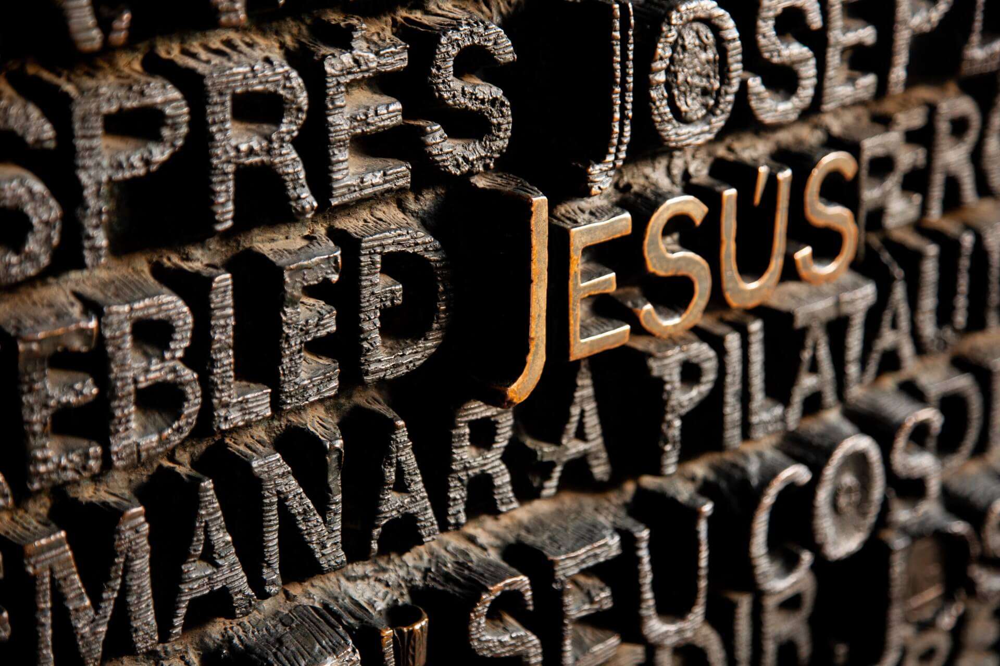
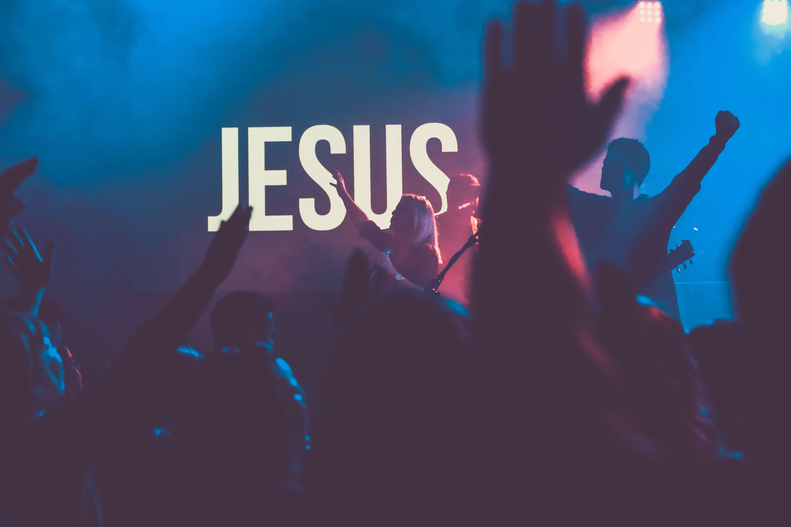
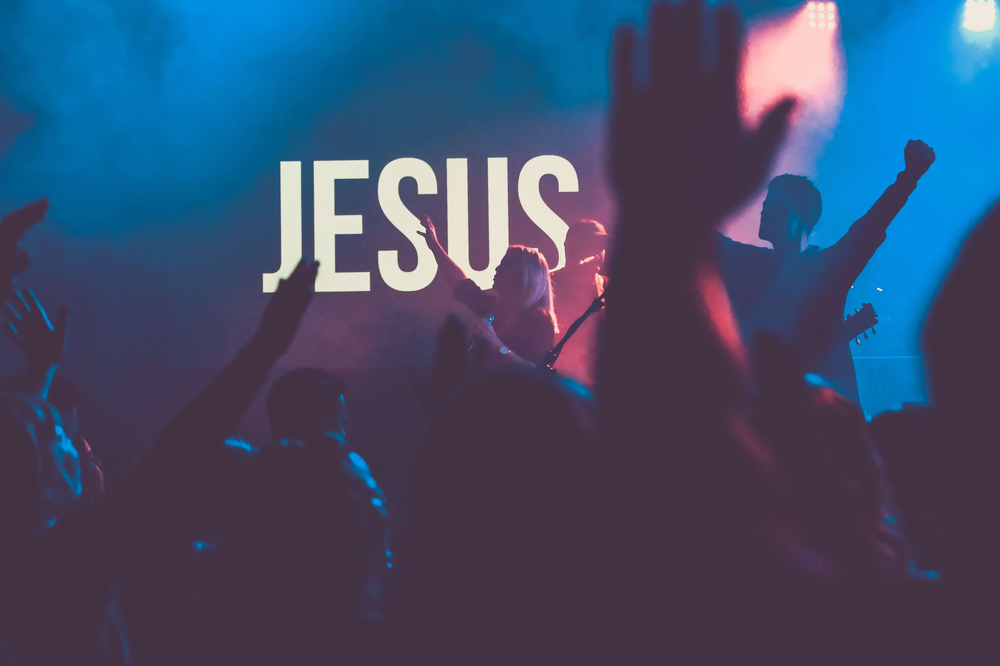
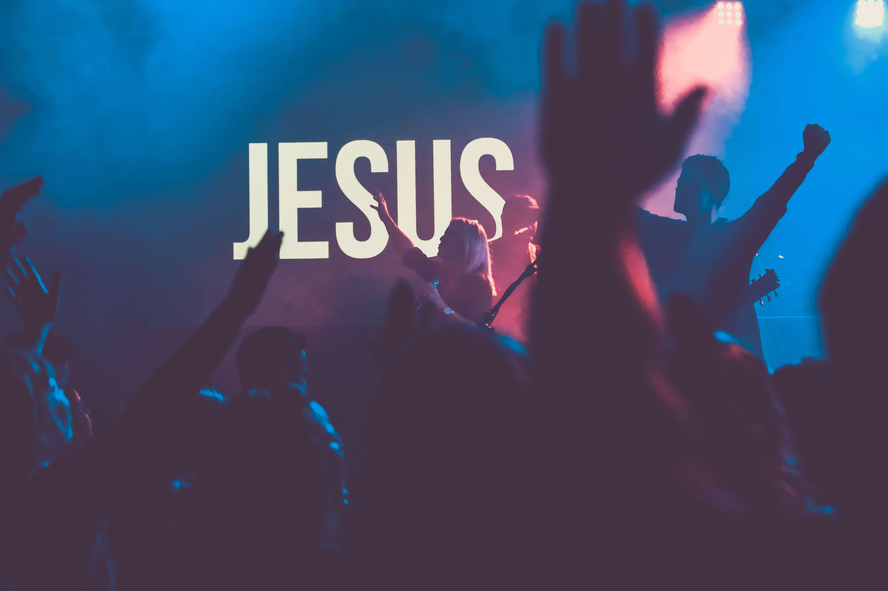

Nuestros Servicios
1Horarios de Cultos
-Martes Culto de Señoras.
5pm
2Horario de Cultos
5pm
3Horario de Cultos
- Sábados Culto de Jóvenes.
5pm
4Horario de Cultos
- Culto Evangelístico Dominicales.
10am y 4pm
Galeria

 

